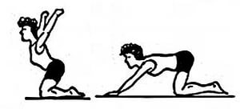

3.6 Тірек-қимыл аппаратының бұзылулары кезіндегі емдік дене тәрбиесі
Тірек-қимыл аппараты – адам ағзасындағы ең ауқымды жүйе. Оған адам қаңқаы, бұлшықеттер мен сіңірлер жатады және солардың арқасында кез келген қимылды жасай алады. Тірек-қимыл аппаратының ауруларын негізінен ортопедия, тарвмотология және неврология секілді медицина саласы емдейді. Дегенмен, бұл жүйені емдеудегі сауықтыру гимнастикасының да үлесін жоққа шығара алмаймыз.
Тірек-қимыл аппаратында туындаған аурудың салдары ішкі мүшелерге де зиянын тигізеді. Сондықтан «дұрыс дене бітімі», «қаңқа» секілді түсініктерге дұрыс мән беру керек.
Сколоиоз кезінде қолданылатын емдік дене тәрбиесі жаттығулары
Сколиоз дегеніміз, омыртқаның оңға немесе солға қисайып кетуі.
Сколизоды емдеудің бірден бір жолы – емдік дене тәрбиесі. Адам белгілі бір жаттығуларды дұрыс орындау арқылы омыртқаның қисаюын түзей алады. Дегенмен, барлық жаттығулардың емдік-түзетуші қасиеті бар дей алмаймыз. Егер сколиоз омыртқа қызметінің жетіспеушіліген туындаған болса, онда дене жаттығуларының көмегімен оын түзетуге болады. Ал патологияның себебі түрлі дәрежедегі күрделі ауру немесе себебі белгісіз жағдайлар болса, онда дене жаттығуларының көмегімен оны емдеу мүмкін емес.
Сколоиоз кезіндегі емдік дене тәрбиесінің жалпы нығайтушы және қосалқы ықпал ету әсері бар.
90-сурет. Сколиозды түзету үшін қолданылатын жаттығу
Бірінші және екінші дәрежелі сколиоз кезінде қолданылатын негізгі ем – дене шынықтыру жаттығулары.
Дене шынықтырудың емдік қасиеті бар екендігін көне замандардан білеміз және оның емдік бағыттағы маңызы оразан зор. Дұрыс тамақтану және тыныс алу секілді дене жаттығуларымен жүйелі шұғылданған жағдайда ғана омыртқаның қисаюын түзетуге болады. Тамақтанудың негізін азық құрайтын болса, емдік бағыттағы дене шынықтырумен шұғылданудың басты құралы – дұрыс таңдалған дене жаттығулары. Омыртқаның басқа ауру түрлерімен салыстырғанда, сколиоз кезінде қолданылатын гимнастикалық жаттығуларға ерекше талаптар қойылады.
Сколиоз кезіндегі ЕДТ жаттығуларын құру кез келген адамның қолынан келе бермейді. Оны арнайы сертификаты бар нұсқаушы дәрігермен біріге отырып құрастыруы керек. Жаттығулардың түзетуші ассимтериялық маңызы болуы шарт. Әрине ол жаттығулар омыртқаның қисаю дәрежесіне сәйкес ұсынылады.
Қисаюды одан сайын ұлғайтатын жүктемелерге мыналарды жатқызуға болады:
а) түрегеп тұрып зілтемір және батпан көтеру;
б) шапшаң қиылдау: үдей жүгіру, секіру түрлері, акробатикалық жаттығулар;
в) би және спорттық гимнастика.
Емдік гимнастика жаттығулары баяу қарқынмен, қарапайымнан күрделіге қағидасы бойынша құрылуы керек. Нәтижесінде омыртқа жотасының қисаюы тоқталып, шынығу процесі басталады.
Әдетте алдымен денені дене белсенділігіне даярлау, бұлшықетті қыздыру жаттығулары орындалады. Олар денедегі барлық бұлшықеттер мен буындарды созу және жұмысқа қосуға арнап өткізіледі. Дұрыс дене бітімін қалыптастыруға аяқ пен қол қатыспайды деген жаңсақ пікірден алшақ болу керек. Солардың көмегімен ғана барлық қимыл-қозғалыс әрекеттері жүзеге асырылады.
Сабақтың қорытынды бөлімінде денені босаңсытатын, тыныс алуды қалпына келтіретін, денені уақалайтын жаттығулар кешені қосылады.
Симметриялы емес жаттығулар емдік гимнастиканың негізгі бөлігін құрайды.
Созылған бұлшықетке жүктеме көбірек түсуі керек. Мысалы, қол жоғарыға көтеріледі, алға созылады немесе басқа қойылады. Ал дем тарту бастапқы қалыпта жүзеге асырылып, тыныс алу түзеледі, яғни дененің иілген жағы көбірек «тыныс алады».
S-тәрізді көкірек сколиозына арналған жаттығулар үлгісі
Еденде шалқалап жату, омыртқа қисайған жақтағы қол қапталға, екіншісі жоғарыға созылған (немесе бүгілген жағдайда желкеге қойылған). Дем шығарған кезде қол, бас, иық пен кеудені көтеру және 5-7 секунд осы қалыпта болу. Қайтадан бастапқы қалыпқа келу.
Көкірек сколиозы үшін дұрыс тыныс алудың маңызы зор. Себебі ол көкірек сколиозы кезінде зардап шегетін өкпенің жұмысын реттеуге көмектесетінін есте сақтау керек.
S тәрізді көкірек сколиоздың қарапайым түрінде ғана тік тұрып еңкеюге болады. Мысалы, қисайған жақтағы қол төмен түсірілген. Екінші қол желкеде. Доға жаққа қарай еңкею: оң жақтағы сколиоз үшін оң жақ бүйірмен жату – қол оңға, сол жақтағы сколиоз үшін сол жақпен жату керек.
Қол желкеде (бір шынтақты бас деңгейінде, қисайған жақтағы қолды бір қапталға шығарамыз), дем тарту. Кеудені қапталдағы қолға қарай бұру және дем шығару (сколиоздың салдарынан пайда болған омыртқа қысылуын азайтып).
S –тәрізді сколиоз кезіндегі ЕДТ кешені
91-сурет. Жауырынға жату және аяқты түрлі биіктікке көтеру
(45, 70 және 90°) жаттығулары
92-сурет. Көкірек сколиозы кезінде орындалатын жаттығулар:
а) етпеттеп жатып тік аяқты көтеру:
б) аяқ пен қолды түрлі қалыпта ұстап орындалатын жаттығу.
93-сурет. Орындықта жатып, аяқты гимнастикалық қабырғаға
іліп кеудені көтеру-түсіру
94-жаттығу. Медициналық допта орындалатын жаттығу
95-сурет. Етпеттеп жатып қолды кезегімен алға созу (арқаның қиғаш бұлшықеттерін дамыту)
96-сурет. Төрттағандап тұрып аяқпен қолды көтере созу
97-сурет. Медициналық доппен орындалатын жаттығулар
98-сурет. Аяқ пен қолды түрлі қалыпта ұстап омыртқа жотасын нығайту
99-сурет. Бір бүйірмен жатып тік және бүгілген аяқты сермеу
100-сурет. Бір бүйірмен таянып жатып қолды созу
101-сурет. Етпеттеп жатып аяқ пен қолды түрлі қалыпта ұстау
102-сурет. Тепе-теңдікті сақтау және дене бітімін дамыту жаттығуы
103-сурет. Етпеттеп жатып гимнастикалық таяқша
және батпанмен орындалатын жаттығулар
104-сурет. Гимнастикалық таяқша және резеңкемен орындалатын жаттығулар
105-сурет. Етпеттеп жатып, қолды арқаға қойып кеудені көтеру

106-сурет. Төрттағандап тұрып кеудені көтеру, қолды екі жаққа шығару
107-сурет. Жүзу бассейнінде жүкті байлап су түбінен жоғарыға итерілу
108-сурет. Жүзу тақтайшасын желкеге қойып жүзу
Омыртқа жотасын қалпына келтіру және нығайту үшін қолданылатын жаттығулар кешені
1-жаттығу. Аяқ иық деңгейінде, қол дене бойымен төмен түсірілген. Сәл жүрелей отырып, тізені қолмен қапсара құшақтау. Бір мезгілде тізе және белді шеңбер бойымен оңға және солға 5-6 рет айналдыру. Тыныс алу еркін орындалады.
2-жаттығу. Аяқ бірге, шынтақтан бүгілген қол кеуде алдында. 1 санына оң тізені оң шынтаққа тигізу; 2 – бастапқы қалыпқа келу. Дәл солай сол тізе, сол шынтақпен қайталау. Жаттығу әр аяққа 5-6 реттен қайталанады.
3-жаттығу. Аяқ иық деңгейінде, қол белде. 1-2 кеудені оңға бұру – дем тарту; 3-4 бастапқы қалыпқа келу – дем шығару. Дәл солай солға қайталау. Жаттығу әр жаққа 5-6 реттен қайталанады.
4-жаттығу. Аяқ иық деңгейінде, қол екі жақта. 1-4 тік қолды алға айналдыру және жартылай отыру. 5-8 дәл солай, тек қолды артқа айналдыру. Жаттығу 5-6 рет қайталанады.
5-жаттығу. Аяқ иық деңгейінде, қол төменде. 1-3 – солға серпе еңкею, сол қолдың саусақтары сол аяқтың ұшына тиеді, оң қол жоғарыда. 4 – бастапқы қалыпқа келу. Дәл солай оң аяққа серпіле еңкею. Жаттығу 4-6 рет қайталанады.
6-жаттығу. Аяқ бірге, қол төменде. 1 – оң аяқты қапталға сермеу, қол екі жаққа; 2 – бастапқы қалыпқа келу; 3 – жүрелей отыру, қол алға; 4 – бастапқы қалыпқа келу. Дәл солай сол аяқпен қайталау. Жаттығу 4-5 рет қайталанады.
7-жаттығу. Аяқ иық деңгейінде, гинастикалық таяқша кеуде алдында. Серіппені тартқандай, таяқшаны екі ұшынан екі жаққа тарту. Тыныс алу еркін орындалады. Жаттығу 5-6 рет қайталанады.
8-жаттығу. Аяқ иық деңгейінде, гимнастикалық таяқша артта – бел тұсында. Таяқтың екі ұшынан ұстап, төменнен-жоғары көтеру, содан соң бөксеге дейін түсіру. Тыныс алу еркін. Жаттығу 5-6 рет қайталанады.
Емдік жаттығулардың барлығы аурудың өткір ушығу дәрежесі басылған соң ғана жасалуы керек.
{kind=link}